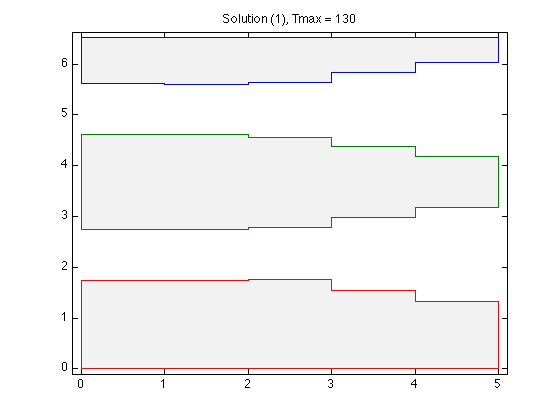
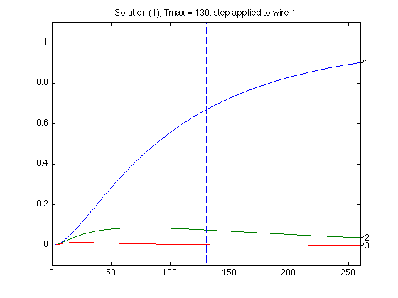
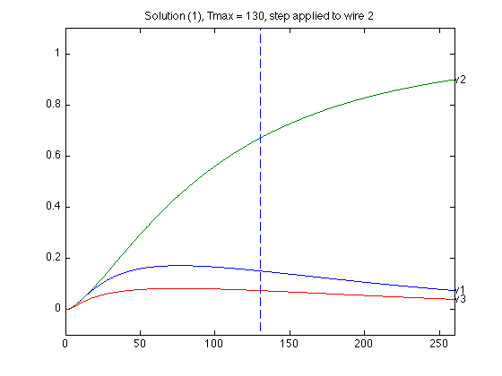
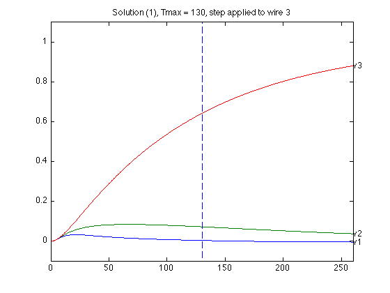
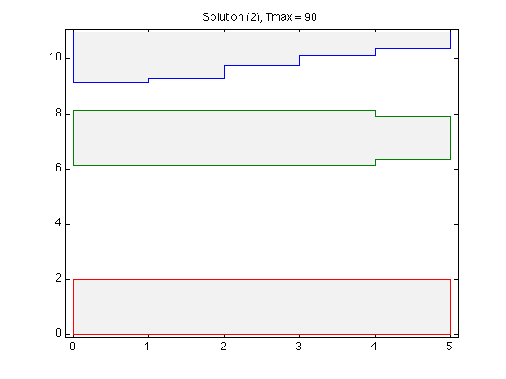
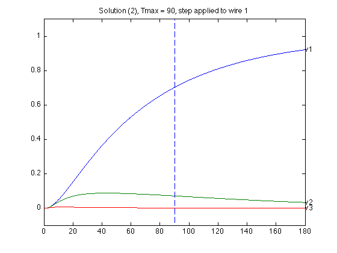
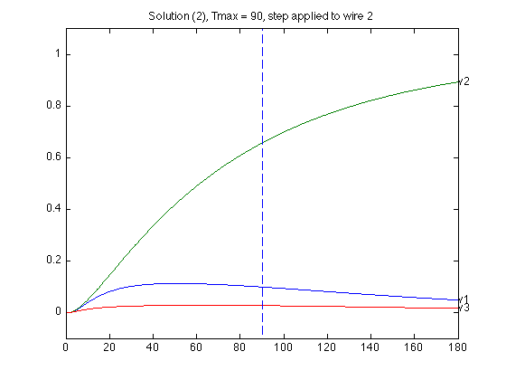
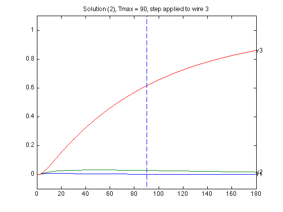
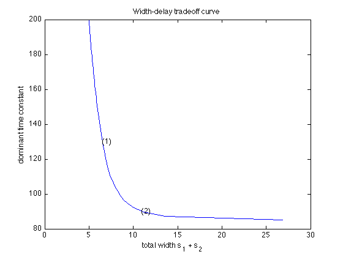

Combined wire sizing and spacing
n = 6;
N = 3*n;
m = n-1;
alpha = 1;
beta = 0.5;
gamma = 2;
G0 = 100;
C0 = [10,20,30];
wmin = 0.1;
wmax = 2.0;
smin = 1.0;
smax = 50;
CC = zeros(N,N,5*m+1);
GG = zeros(N,N,3*m+1);
for w = 0 : 2,
CC(w*n+n,w*n+n,1) = C0(w+1);
GG(w*n+1,w*n+1,1) = G0;
for i = 1 : m,
CC(w*n+[i,i+1],w*n+[i,i+1],w*m+i+1) = beta*[1,0;0,1];
if w < 2,
CC(w*n+[i, n+i ],w*n+[i, n+i ],(w+3)*m+i+1) = gamma*[1,-1;-1,1];
CC(w*n+[i+1,n+i+1],w*n+[i+1,n+i+1],(w+3)*m+i+1) = gamma*[1,-1;-1,1];
end
GG(w*n+[i,i+1],w*n+[i,i+1],w*m+i+1) = alpha*[1,-1;-1,1];
end
end
CC = reshape(CC,N*N,5*m+1);
GG = reshape(GG,N*N,3*m+1);
npts = 50;
delays = linspace( 85, 200, npts );
xdelays = [ 130, 90 ];
xnpts = length(xdelays);
areas = zeros(1,npts);
xareas = zeros(1,xnpts);
for j = 1 : npts + xnpts,
if j > npts,
xj = j - npts;
delay = xdelays(xj);
disp( sprintf( 'Particular solution %d of %d (Tmax = %g)', xj, xnpts, delay ) );
else,
delay = delays(j);
disp( sprintf( 'Point %d of %d on the tradeoff curve (Tmax = %g)', j, npts, delay ) );
end
cvx_begin sdp quiet
variables w(m,3) t(m,2) s(1,2)
variable G(N,N) symmetric
variable C(N,N) symmetric
minimize( sum(s) )
subject to
G == reshape( GG * [ 1 ; w(:) ], N, N );
C == reshape( CC * [ 1 ; w(:) ; t(:) ], N, N );
delay * G - C >= 0;
w( : ) >= wmin;
w( : ) <= wmax;
t( : ) <= 1 / smin;
s( : ) <= smax;
inv_pos( t(:,1) ) <= s(1) - w(:,1) - 0.5 * w(:,2);
inv_pos( t(:,2) ) <= s(2) - w(:,3) - 0.5 * w(:,2);
cvx_end
ss = cvx_optval;
if j <= npts,
areas(j) = ss;
else,
xareas(xj) = ss;
figure(4*xj-2);
m2 = 2 * m;
x1 = reshape( [ 1 : m ; 1 : m ], 1, m2 );
x2 = x1( 1, end : -1 : 1 );
y = [ ss*ones(m2,1), s(2) + 0.5*w(x1,2), zeros(m2,1) ; ...
ss-w(x2,1), s(2) - 0.5*w(x2,2), w(x2,3) ; ...
ss, s(2) + 0.5*w(1,2), 0 ];
x1 = reshape( [ 0 : m - 1 ; 1 : m ], m2, 1 );
x2 = x1( end : -1 : 1, 1 );
x = [ x1 ; x2 ; 0 ];
hold off;
fill( x, y, 0.9 * ones(size(y)) );
hold on
plot( x, y, '-' );
axis( [-0.1, m+0.1,-0.1, ss+0.1]);
colormap(gray);
caxis([-1,1])
title(sprintf('Solution (%d), Tmax = %g',xj,delay));
A = -inv(C)*G;
T = linspace(0,2*delay,1000);
B = -A * kron( eye(3), ones(n,1) );
for inp = 1 : 3,
figure(4*xj-2+inp);
Y1 = simple_step(A,B(:,inp),T(2),length(T));
hold off;
plot(T,Y1([n,2*n,3*n],:),'-');
hold on;
text(T(1000),Y1( n,1000),'v1');
text(T(1000),Y1(2*n,1000),'v2');
text(T(1000),Y1(3*n,1000),'v3');
axis([0 2*delay -0.1 1.1]);
plot(delay*[1;1], [-0.1;1.1], '--');
title(sprintf('Solution (%d), Tmax = %g, step applied to wire %d',xj,delay,inp));
end
end
end
figure(1);
ind = isfinite(areas);
plot(areas(ind), delays(ind));
xlabel('total width s_1 + s_2');
ylabel('dominant time constant');
title('Width-delay tradeoff curve')
hold on;
for k = 1 : xnpts,
text( xareas(k), xdelays(k), sprintf( '(%d)', k ) );
end
Point 1 of 50 on the tradeoff curve (Tmax = 85)
Point 2 of 50 on the tradeoff curve (Tmax = 87.3469)
Point 3 of 50 on the tradeoff curve (Tmax = 89.6939)
Point 4 of 50 on the tradeoff curve (Tmax = 92.0408)
Point 5 of 50 on the tradeoff curve (Tmax = 94.3878)
Point 6 of 50 on the tradeoff curve (Tmax = 96.7347)
Point 7 of 50 on the tradeoff curve (Tmax = 99.0816)
Point 8 of 50 on the tradeoff curve (Tmax = 101.429)
Point 9 of 50 on the tradeoff curve (Tmax = 103.776)
Point 10 of 50 on the tradeoff curve (Tmax = 106.122)
Point 11 of 50 on the tradeoff curve (Tmax = 108.469)
Point 12 of 50 on the tradeoff curve (Tmax = 110.816)
Point 13 of 50 on the tradeoff curve (Tmax = 113.163)
Point 14 of 50 on the tradeoff curve (Tmax = 115.51)
Point 15 of 50 on the tradeoff curve (Tmax = 117.857)
Point 16 of 50 on the tradeoff curve (Tmax = 120.204)
Point 17 of 50 on the tradeoff curve (Tmax = 122.551)
Point 18 of 50 on the tradeoff curve (Tmax = 124.898)
Point 19 of 50 on the tradeoff curve (Tmax = 127.245)
Point 20 of 50 on the tradeoff curve (Tmax = 129.592)
Point 21 of 50 on the tradeoff curve (Tmax = 131.939)
Point 22 of 50 on the tradeoff curve (Tmax = 134.286)
Point 23 of 50 on the tradeoff curve (Tmax = 136.633)
Point 24 of 50 on the tradeoff curve (Tmax = 138.98)
Point 25 of 50 on the tradeoff curve (Tmax = 141.327)
Point 26 of 50 on the tradeoff curve (Tmax = 143.673)
Point 27 of 50 on the tradeoff curve (Tmax = 146.02)
Point 28 of 50 on the tradeoff curve (Tmax = 148.367)
Point 29 of 50 on the tradeoff curve (Tmax = 150.714)
Point 30 of 50 on the tradeoff curve (Tmax = 153.061)
Point 31 of 50 on the tradeoff curve (Tmax = 155.408)
Point 32 of 50 on the tradeoff curve (Tmax = 157.755)
Point 33 of 50 on the tradeoff curve (Tmax = 160.102)
Point 34 of 50 on the tradeoff curve (Tmax = 162.449)
Point 35 of 50 on the tradeoff curve (Tmax = 164.796)
Point 36 of 50 on the tradeoff curve (Tmax = 167.143)
Point 37 of 50 on the tradeoff curve (Tmax = 169.49)
Point 38 of 50 on the tradeoff curve (Tmax = 171.837)
Point 39 of 50 on the tradeoff curve (Tmax = 174.184)
Point 40 of 50 on the tradeoff curve (Tmax = 176.531)
Point 41 of 50 on the tradeoff curve (Tmax = 178.878)
Point 42 of 50 on the tradeoff curve (Tmax = 181.224)
Point 43 of 50 on the tradeoff curve (Tmax = 183.571)
Point 44 of 50 on the tradeoff curve (Tmax = 185.918)
Point 45 of 50 on the tradeoff curve (Tmax = 188.265)
Point 46 of 50 on the tradeoff curve (Tmax = 190.612)
Point 47 of 50 on the tradeoff curve (Tmax = 192.959)
Point 48 of 50 on the tradeoff curve (Tmax = 195.306)
Point 49 of 50 on the tradeoff curve (Tmax = 197.653)
Point 50 of 50 on the tradeoff curve (Tmax = 200)
Particular solution 1 of 2 (Tmax = 130)
Particular solution 2 of 2 (Tmax = 90)
        